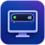
IslandDesk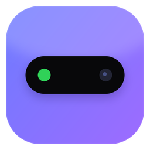
Динамический остров для Windows
IslandDesk — чёрная пилюля вверху экрана, как на iPhone. Она сама показывает музыку, громкость, таймер, загрузки и уведомления — и плавно перетекает из формы в форму. А в спокойные минуты — время, погоду и ближайшее событие календаря.
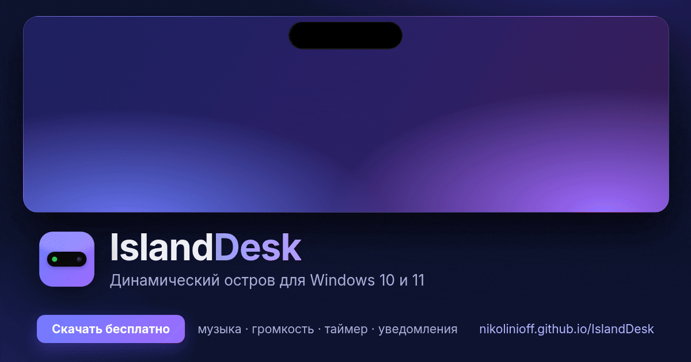
Новое в 1.2
Пилюля больше не пустует · что нового в 1.2.0
Часы в пилюле
Когда ничего не происходит — время в формате Windows, при наведении — дата. Рядом 1–2 значка: погода, событие, заряд, курсы ЦБ или «до Нового года N дней», по желанию — по кругу.
Погода
Город — поиском в настройках. Значок и температура раз в 45 минут через Open-Meteo, без ключей и без определения места по IP.
Календарь
«Планёрка через 15 мин» из ссылки или файла .ics (Google, Яндекс, Outlook) и напоминание за 10 минут.
Домашний экран
Щелчок по спокойной пилюле — крупные часы и карточки: погода, событие, курсы и нагрузка процессора, памяти и сети (считается, только пока открыто).
Красивые анимации
Пружинистое раскрытие, капля, которая отделяется и сливается обратно, волна по краю при уведомлении, «дыхание» под музыку. Выключены анимации в Windows — выключены и тут.
Размер острова
90, 100, 115 или 130 % — под ваш монитор. И у каждой новинки свой переключатель.
Что умеет
Бесплатно · без установки · без рекламы · обновляется сама
Сейчас играет
Spotify, Яндекс Музыка, YouTube в браузере и другие плееры: обложка, название и кнопки. Полосу трека можно тянуть — если плеер разрешает перемотку. Пока звук играет — пляшет эквалайзер.
Громкость и яркость
Аккуратная полоска вместо системного окошка, с названием устройства. Колесо мыши над островом — громкость. Яркость — на встроенных экранах.
Раскладка и Caps Lock
RU / EN при переключении, Caps Lock и Num Lock — вкл / выкл. Ничего не нужно настраивать.
Наушники и батарея
Подключили наушники — остров покажет их и заряд Bluetooth. На ноутбуке — «Зарядка», «От батареи», «Низкий заряд».
Таймер всегда под рукой
Вкладка «Таймер» в раскрытом острове — даже когда играет музыка или занят микрофон. Или правый щелчок по острову либо по значку у часов → «Запустить таймер». 1, 5, 10, 25 минут или свой; в конце «Время вышло» со звуком.
Загрузки
«Идёт загрузка», а потом «Скачано» с кнопками «Открыть» и «Показать в папке». Chrome, Edge, Firefox; папку можно сменить.
Микрофон
Оранжевая точка, пока Discord, Zoom или другая программа слушает микрофон. Выключить — в один щелчок.
Связь с программами Nikolini
PeekDesk, SnapDesk и другие могут показать на острове сообщение. Если стоит PeekDesk, файл, брошенный на правую половину острова, откроется в нём.
Вкладки в раскрытом острове
Сверху ряд: Музыка, Таймер, Загрузка, Микрофон, Буфер, Полка. Таймер есть всегда, остальное — когда есть что показать. Ваш выбор не перебивается, а курсор над рядом не даёт острову свернуться.
Буфер обмена
Скопировали — остров коротко покажет что: текст, картинку или файлы. Во вкладке «Буфер» последние 8 текстов, щелчок копирует снова. Только в памяти, на диск не пишется; то, что менеджеры паролей помечают как секретное, не читается.
Полка файлов
Бросьте файлы на остров — они полежат на полке (до 12). Оттуда их можно утащить в любое окно, открыть или показать в папке. Хранятся ссылки, а не копии; при выходе полка очищается.
Живой, но тактичный
Пружинная анимация с частотой монитора, второе занятие — кружок рядом. Не забирает фокус, не мешает щелчкам, прячется в играх и фильмах.
Лёгкий
exe около 1 МБ, без установщика. В простое не опрашивает систему и почти не тратит процессор — просыпается по событиям Windows, а с часами ещё раз в минуту.
Всё выключается
У каждой функции свой переключатель. Можно прятать пилюлю, когда ничего не происходит, и выбрать монитор.
Светлая и тёмная тема
Окно настроек следует теме Windows. Обновления — «Автоматически», «Спрашивать» или «Не проверять».
Как это выглядит
Остров в разных состояниях — тот же код отрисовки, что и в программе
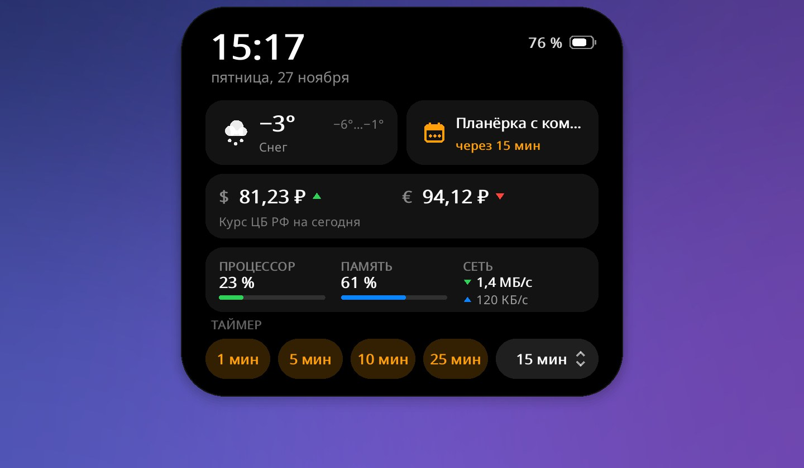
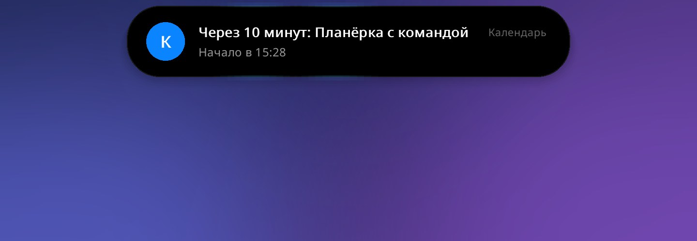
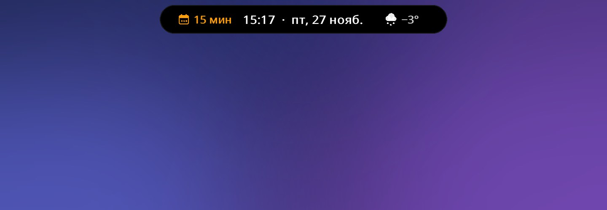
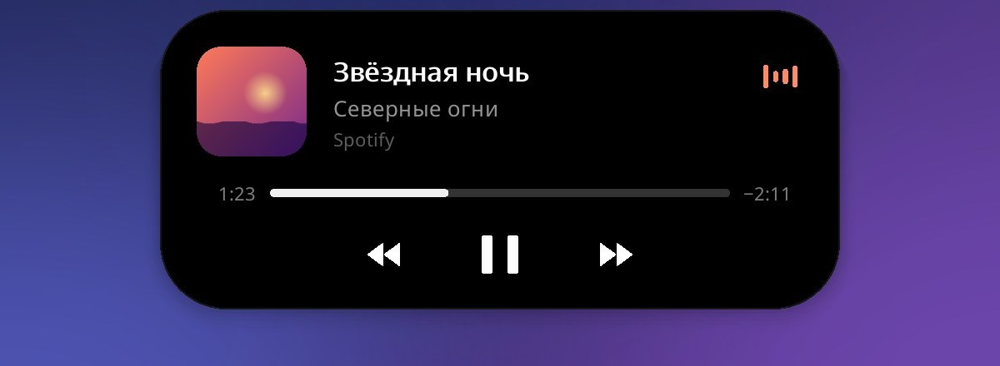
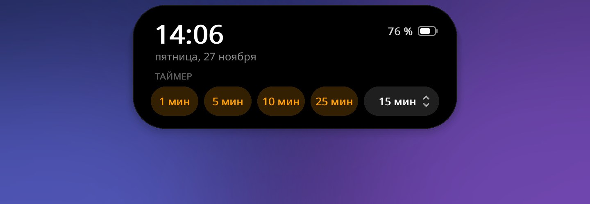
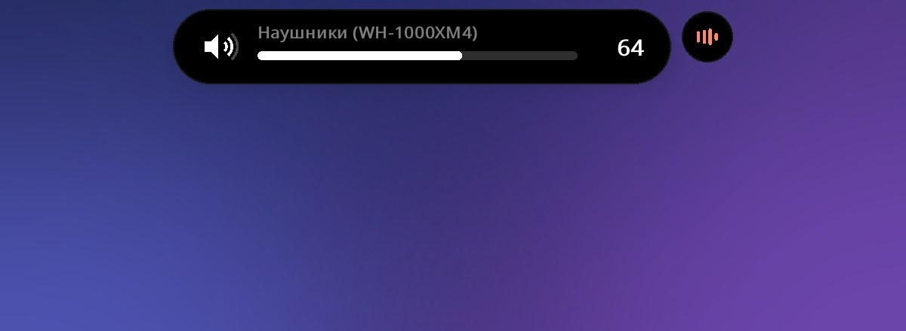
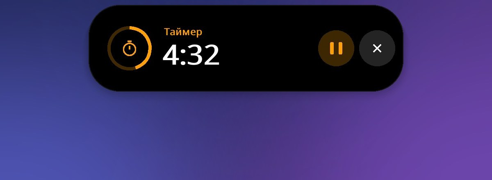
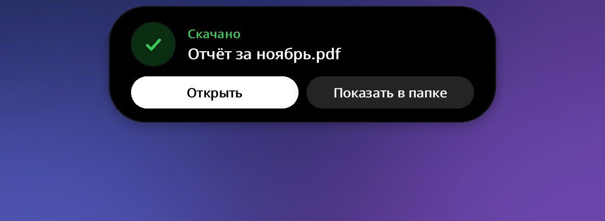
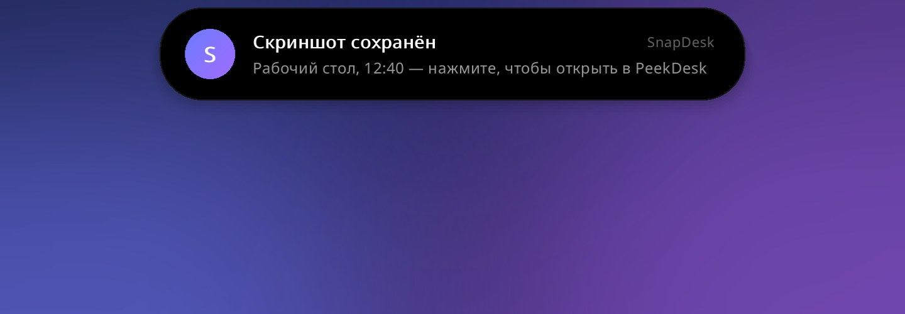
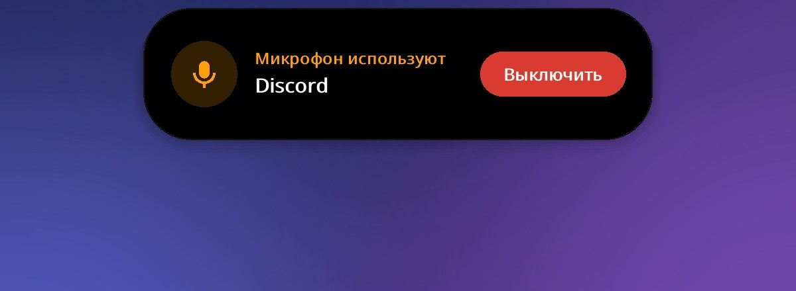
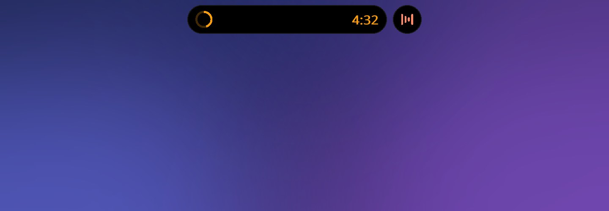
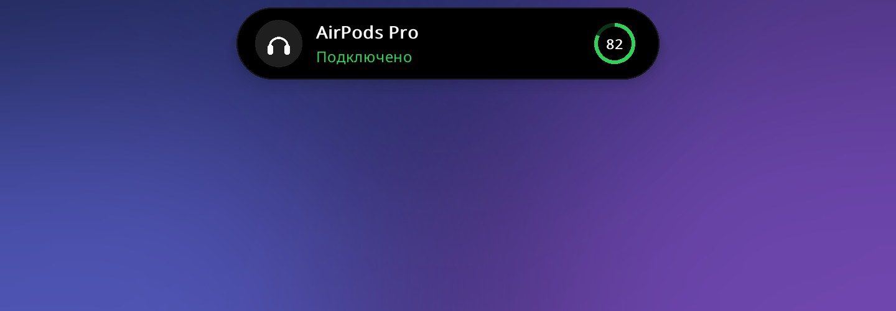
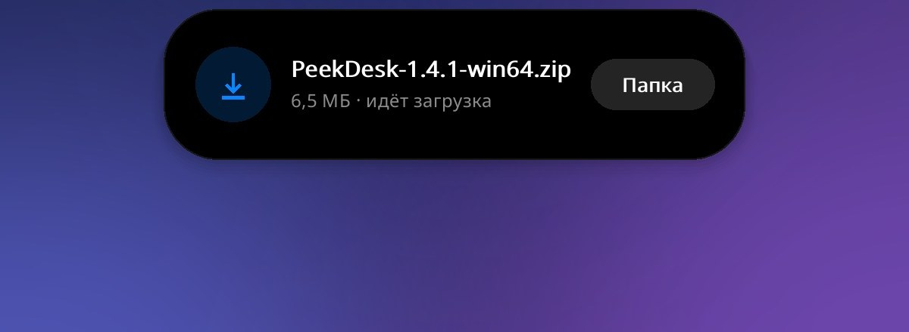
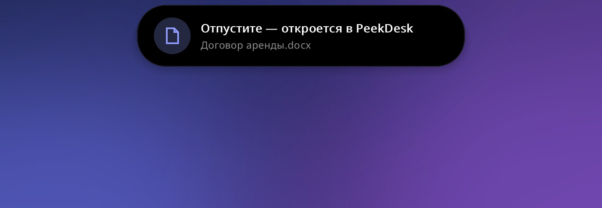
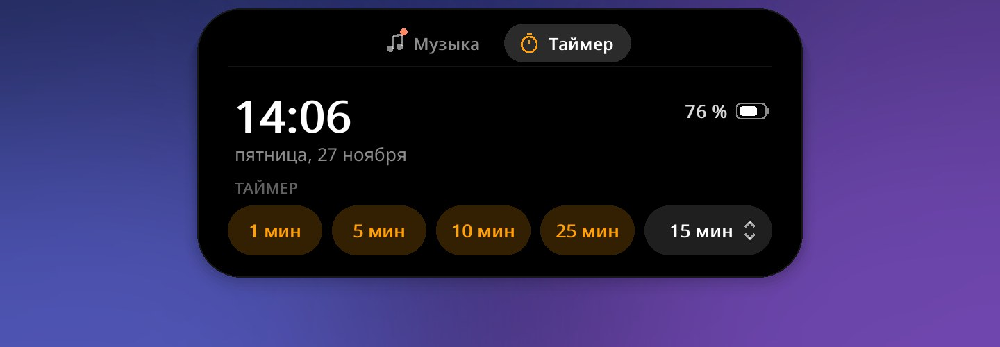
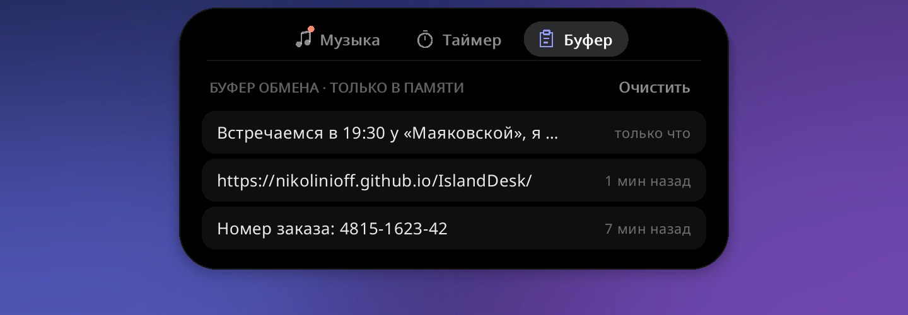
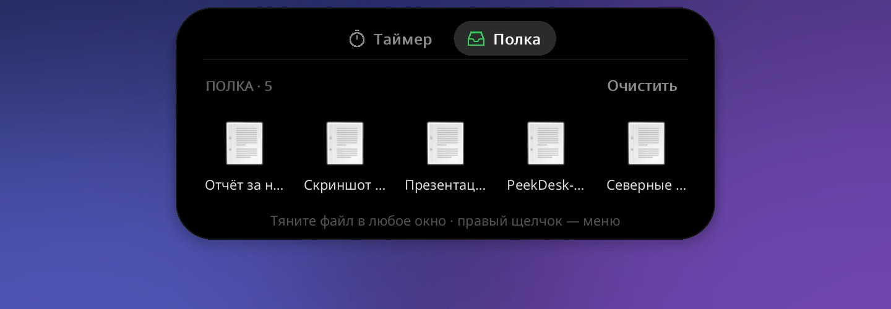
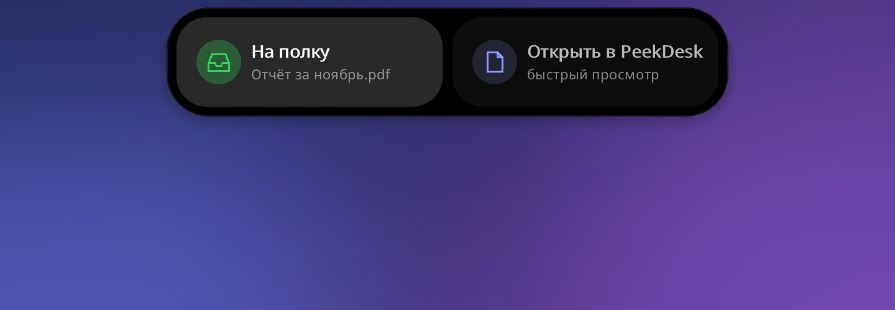
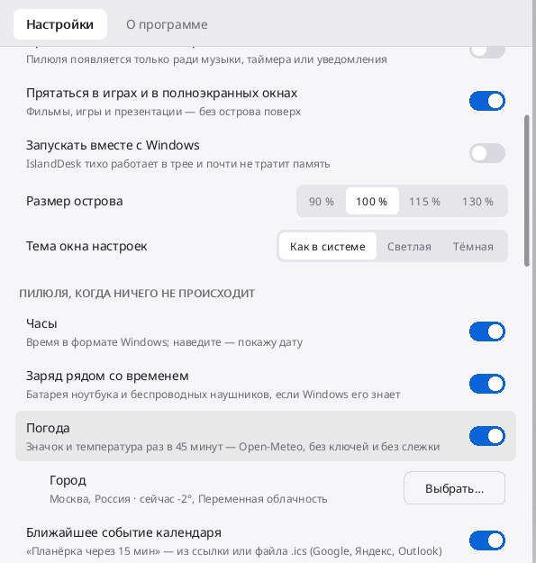
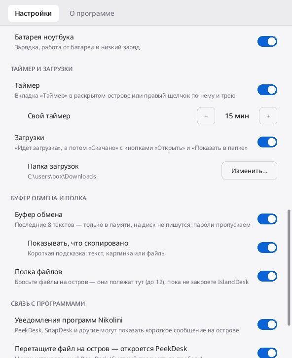
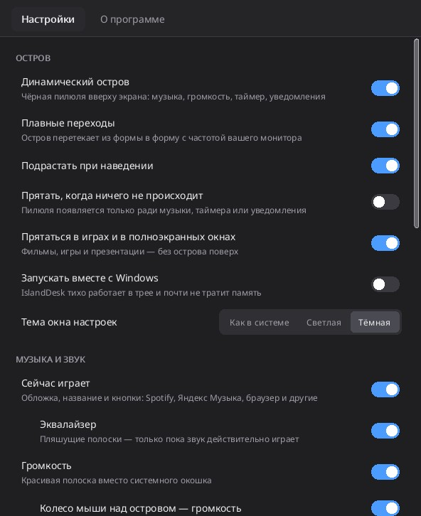
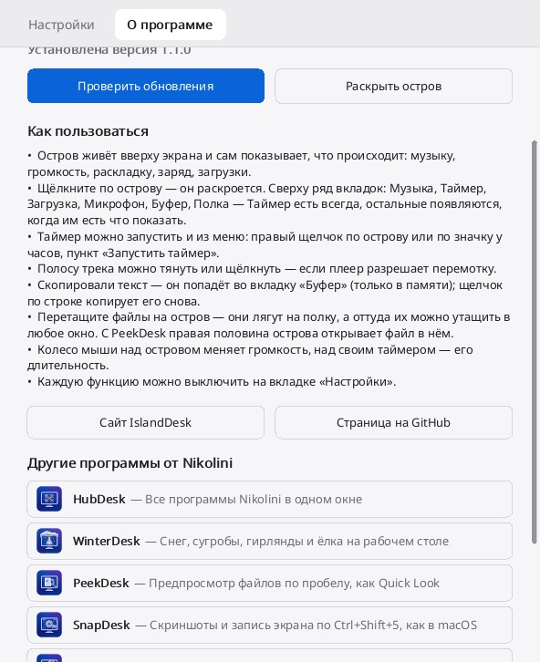
Как пользоваться
Ничего настраивать не нужно — остров работает сразу
| щелчок по острову | раскрыть: большой плеер, таймер, загрузки или часы с быстрыми таймерами; сверху — вкладки, чтобы переключиться (Таймер есть всегда); щелчок мимо — свернуть |
| полоса трека в плеере | щёлкнуть или потянуть — перемотка (если плеер её разрешает) |
| колесо мыши над островом | громкость (над своим таймером — его длительность) |
| правый щелчок по острову или по значку у часов | меню: «Запустить таймер» (1, 5, 10, 25 минут или свой), пауза и стоп таймера, настройки, выход |
| перетащить файлы на остров | положить на полку; если установлен PeekDesk — правая половина острова открывает файл в нём |
| файл на полке | щелчок — открыть, потянуть — в любое окно, правый щелчок — «Показать в папке» и «Убрать с полки» |
| строка во вкладке «Буфер» | скопировать этот текст снова |
| щелчок по значку у часов · повторный запуск IslandDesk.exe | окно настроек |
| Esc в окне настроек | закрыть окно |
Как установить
- Скачайте IslandDesk-win64.zip.
- Распакуйте в постоянную папку, например
Документы\IslandDesk. - Запустите IslandDesk.exe — остров появится вверху экрана, а значок — у часов. IslandDesk сам включит автозапуск (выключается в настройках).
- Если Windows покажет «Система Windows защитила ваш компьютер» — «Подробнее» → «Выполнить в любом случае».
Требования: Windows 10 (1809 или новее) или 11, 64-бит. Честно об ограничениях: яркость — только встроенные экраны ноутбуков (внешние мониторы по DDC/CI пока нет); раскладка, переключённая мышью через языковую панель, появится после смены окна; спрятать системное окошко громкости можно только в Windows 10; перемотка работает, только если плеер её разрешает (иначе полоса не реагирует); буфер помнит только тексты (картинки и файлы лишь показываются) и забывает всё при выходе; полка хранит ссылки на файлы, а не копии, и очищается при выходе.
Вопросы
Почему SmartScreen предупреждает?
Программа новая и пока не подписана платным сертификатом. Скачивайте IslandDesk только со страницы выпусков на GitHub — рядом с архивом лежит файл .sha256 с контрольной суммой.
Не будет ли тормозить компьютер?
Нет. В простое IslandDesk ничего не опрашивает: остров перерисовывается, только когда что-то изменилось (с часами — раз в минуту), а анимация идёт лишь во время смены формы. Нагрузка процессора и сети считается, только пока открыт домашний экран. Эквалайзер работает, только пока играет музыка; таймер обновляется раз в секунду, только пока идёт.
Какие плееры показываются?
Все, что сообщают Windows о музыке (те же, что видны в системной плашке громкости): Spotify, Яндекс Музыка, браузеры (YouTube, ВК Музыка и др.), «Медиаплеер» Windows и другие.
Остров закрывает часть окна?
Он маленький и сидит у самого верхнего края. Щелчки рядом с пилюлей проходят в окно под ней. В полноэкранных играх и видео остров прячется сам, а в настройках можно прятать его, когда ничего не происходит.
Почему календарь через .ics, а не «Календарь» Windows?
Календарь Windows отдаёт события только программам из Microsoft Store с особым «паспортом» пакета, а IslandDesk — обычный exe без установщика. Поэтому он читает календарь по ссылке .ics: в Google это «Секретный адрес в формате iCal», в Яндексе — «Экспорт», в Outlook — «Опубликовать календарь» → ICS. Подойдёт и файл .ics на диске.
Есть платная версия?
Нет и не планируется: IslandDesk бесплатный целиком, без Pro-функций, рекламы и подписок.
Буфер обмена где-то сохраняется?
Нет. Последние 8 текстов живут только в памяти IslandDesk и пропадают при выходе или выключении функции; на диск и в интернет они не попадают. Содержимое, которое программы помечают как секретное (так делают менеджеры паролей), IslandDesk не читает. Буфер и подсказку «Скопировано» можно выключить по отдельности.
Программа что-нибудь отправляет?
Нет. IslandDesk ничего не собирает. В интернет он обращается к GitHub — вскоре после запуска и раз в 12 часов, чтобы узнать, не вышла ли новая версия (это можно выключить), а при открытии настроек обновляет список «Другие программы от Nikolini». Если вы включили погоду, курсы или календарь по ссылке — ещё к Open-Meteo (координаты выбранного города), cbr-xml-daily.ru (курсы ЦБ РФ) и к адресу вашего календаря. На этом сайте нет счётчиков и аналитики.
Другие программы от Nikolini
Маленькие бесплатные программы для Windows


Обсуждение
Предложить идею · Сообщить о баге · Все обсуждения
Комментарии работают через GitHub-аккаунт и хранятся в обсуждениях проекта.